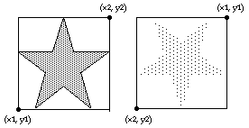

drawfillstar (x1, y1, x2, y2, Color : int)
The drawfillstar procedure is used to draw a filled five pointed star on the screen bounded by a rectangle with bottom left and top right corners of (x1, y1) to (x2, y2) and filled using the specified Color. To get a star outlined in a different color, use drawfillstar with the Color parameter set to the fill color and then call drawstar with the Color parameter set to the border color. If y1 is greater than y2, then the star is drawn upside down.

This program will draw two stars beside each other. The first will be outlined in color 1 and filled in color 2. The second star will be upside down and both filled and outlined in color 3.
setscreen ("graphics")
drawfillstar (0, 0, 100, 100, 1)
drawstar (0, 0, 100, 100, 2)
drawfillstar (150, 100, 250, 0, 3)
The drawfillstar procedure is useful for drawing the American flag.
The meaning of the Color number depends on the current palette. See the palette statement.
The screen should be in a "graphics" mode. See the setscreen procedure for details. If the screen is not in a "graphics" mode, it will automatically be set to "graphics" mode.
setscreen.html, maxx.html, maxy.html and the various draw… procedures.